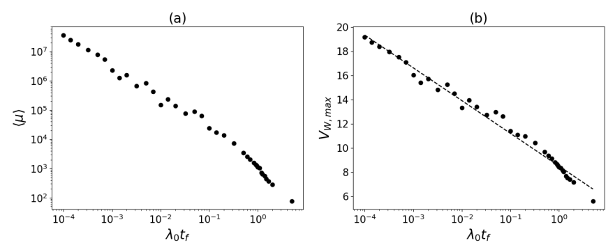
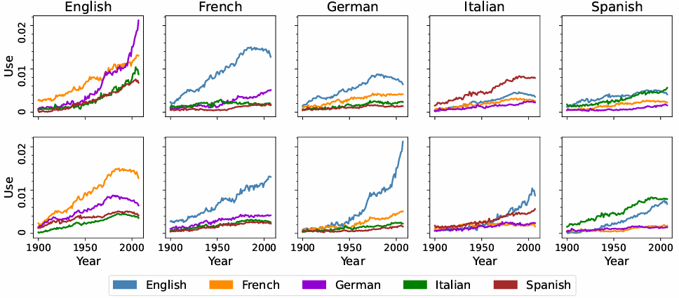
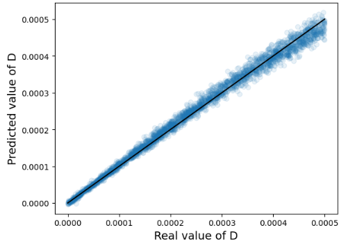
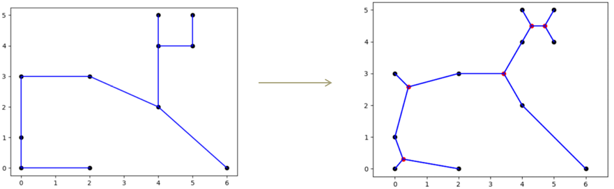
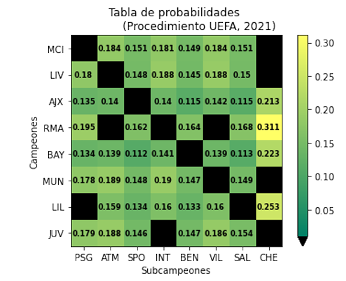
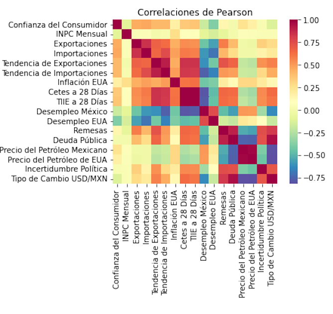
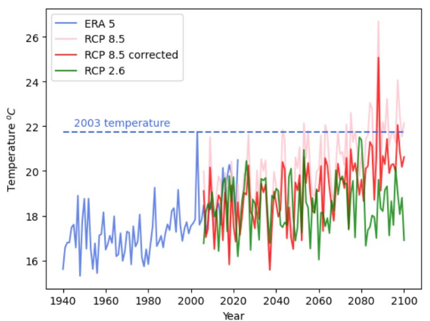
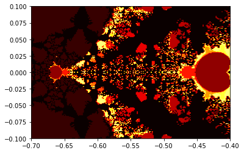
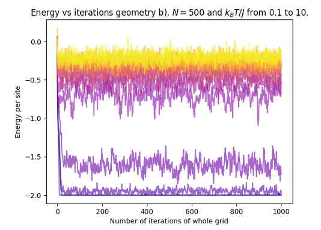
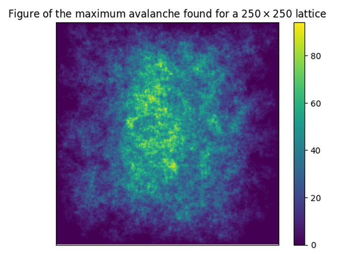

Aquí muestro algunos de los proyectos relacionados con temas de computación o que requieren mucha computación y que realicé durante la licenciatura en Física en la UNAM o durante la maestría en Física de Sistemas Complejos en la Universidad de Copenhague.
1. Learning Optimal Erasure of a Static Random Access Memory (autor principal de artículo de Investigación próximo a publicarse en New Journal Physics)
Este articulo de investigación inició como un proyecto en el instituto Neils Bohr en Copenhague durante mi maestría, que luego mi asesor y yo decidimos extender para poder publicarlo. Ahora está en proceso de ser publicado, siendo yo el autor principal.
A grandes razgos, la idea del proyecto es usar la teoría de termodinámica estocástica para modelar una memoria RAM y obtener una forma de calcular el calor que libera la memoria al borrar un bit. Posteriormente, se usan técnicas de Machine learning y diferenciación automática para encontrar el protocolo que se debe de seguir para borrar la memoria de la forma que produzca la menor cantidad de calor posible.

Imagen de uno de los resultados del proyecto.
Más a detalle, lo que hicimos en este trabajo es lo siguiente:
- Se describe la teoría de una celda de memoria RAM, llegando hasta una ecuación maestra que sea termodinámicamente consistente.
- Se encuentra una expresión matemática para la entropía producida por una celda de memoria RAM al borrar un bit de información de la memoria.
- Usando la librería JAX de Python, se crea un algoritmo que dado un protocolo para borrar un bit, calcula la entropía producida y el estado final del bit.
Luego, utilizando diferenciación automática de la librería JAX, se calcula el gradiente de la entropía producida con respecto a los parámetros que definen al protocolo usado para borrar el bit.
- Se usa descendencia de gradiente con el optimizador ADAM para encontrar el protocolo que minimiza la producción de entropía pero también maximiza qué tanto fue borrado el bit (es decir, se usa optimización multiobjetivo para tomar en cuenta los dos objetivos que se buscan optimizar).
- Se repite lo anterior para distintas duraciones del protocolo, para concluir sobre cómo cambia la producción de entropía respecto a la duración del protocolo
- Se concluye que es posible borrar una celdad de memoria RAM arbitrariamente rápido con una disipación de calor que no crece demasiado al disminuir el tiempo de protocolo. Además, se encuentran explícitamente los protocolos de borrado que minimizan la disipación de calor.
2. Statistical analysis of word flow among five Indo-European languages
Trabajé en este proyecto junto a los doctores Carlos Pineda y Carlos Gershenson de la UNAM y el estudiante de física Josué Ely Molina.
El proyecto tiene el objetivo de cuantificar qué tanto han influido ciertos lenguajes en otros y cómo ha cambiado esa influencia a través de los años.
Para contestar esta pregunta, nos centramos en el Español, Francés, Alemán, Inglés e Italiano y tomamos datos de Google Books.
Estos datos toman millones de libros a través de los años para dar una lista representativa de las palabras que aparecen en algún libro publicado cada año
en cada uno de los lenguajes.
Luego, analizamos todos estos datos y definimos una forma de cuantificar qué tanto ha influido cada idioma en los otros a través de los años. Finalmente calculamos esta cantidad, juntos
con otras cantidades relevantes y analizamos los resultados.

Imagen de uno de los resultados del proyecto, que muestra la influencia de cada lenguaje en los demás (para entender mejor, ver el artículo).
3. Machine Learning Entropy Production in Stochastic Systems (tesis para la maestría en física de sistemas complejos en la Universidad de Copenhague)
Este proyecto es mi tesis de maestría en el Instituto Neils Bohr. La tesis consiste en estudiar el movimiento de células, las cuales naturalmente se mueven de forma estocástica debido a
colisiones con otras células alrededor. En el trabajo hacemos algunos cálculos teóricos sobre sus propiedades termodinámicas (producción de entropía, eficiencia, calor, etc.).
Además, la parte central de la tesis es el entrenamiento de redes neuronales para que dada la trayectoria de una de estas células, puedan predecir la producción de entropía de la célula.

Imagen de uno de los resultados del proyecto.
- Se describe la teoría de la termodinámica estocástica.
- Se crea y entrena una red neuronal para estimar la tasa de producción de entropía de varios sistemas físicos estocásticos sencillos.
- Se prueba que es imposible usar la red neuronal para sistemas estocásticos que tengan ruido activo (que sean autoprupulsados, como una bacteria que se desplaza con un flagelo).
- Para estudiar células con ruido activo, se entrenan otras redes neuronales, ahora siendo redes neuronales recurrentes para que predigan la cantidad de ruido activo de las trajectorias.
4. 2do Lugar en el Concurso de Modelización Matemática (Instituto de Matemática Interdisciplinar, Universidad Complutense de Madrid, 2021)
Quedé en segudo lugar en un concurso organizado por la Universidad Complutense de Madrid en el que participan cientos de equipos de iberoamérica.
Se podía hacer en grupos de hasta tres personas, pero yo participé solo y el premio incluía una compensación de 1200 euros.
El concurso consistía en proponer una solución para un problema abierto de optimización en matemáticas, que involucra también mucha computación. Había que proponer un algoritmo para resolverlo
y estudiar varias propiedades del problema.

Imagen sobre el trabajo. La figura de la izquierda muestra
los puntos en el plano euclídeo y el árbol mínimo que los cubre, la de la derecha
muestra la solución al agregar puntos de Steiner.
El trabajo consiste a grandes razgos en lo siguiente:
- Se define el problema del árbol euclídeo mínimo. En este problema se empieza con puntos ubicados aribtrariamente en el plano y se busca unir todos los puntos de manera que se pueda ir de cualquier punto a cualquier otro y que la longitud total de las
líneas sea lo más corta posible. Un ejemplo se puede ver en la imagen de arriba (la subfigura de la izquierda).
- Se resuelve el problema del árbol euclídeo mínimo computacionalmente, usnado algoritmos ya bien conocidos como el de Prim o Kruskal.
- Se extiende el problema a una versión poco conocida llamada problema de Steiner. En esta versión, es posible
agregar puntos adicionales a los que ya existen y se pueden agregar tantos puntos como se quiera. Si se escogen bien los lugares para agregar puntos, es posible
conectar todos los puntos originales con una longitud total menor que en el problema del árbol euclídeo mínimo. En la figura de la derecha
se muestran los puntos originales (en negro) junto con los puntos ídeales que se pueden agregar (en rojo) para disminuir aún más la longitud total de las líneas.
- Se estudian y demuestran algunas propiedades del problema de Steiner, que es un problema NP-difícil. Por ejemplo: En la solución ideal los puntos agregados siempre tienen 3 conexiones y a ángulos de 120 grados.
- Se propone un algoritmo heurístico para resolver el problema. Yo propuse uno en el que se empieza encontrando el árbol euclídeo mínimo y luego se recorre cada tercia de puntos conectados
del árbol y se ve si agregar un punto extra disminuye la longitud total.
- Se resuelven muchos ejemplos, incluyendo algunos en los que se calcula la solución óptima utilizando un algoritmo que siempre llega a dicha solución (pero que es mucho más lento que el algoritmo heurístico propuesto).
- Se estudia la eficiencia del algoritmo propuesto.
5. 1er Lugar en el Concurso de Modelización Matemática (Instituto de Matemática Interdisciplinar, Universidad Complutense de Madrid, 2022)
Este concurso es la edición siguiente del que se menciona en el punto anterior, sólo que esta vez participé en pareja y gané el primer lugar, con un premio de 2400 euros.
Además, nuestro trabajo fue publicado por la revista del Instituto de Matemáticas Interdisciplinar de la Universidad Complutense de Madrid.

Imagen sobre el trabajo
El trabajo consiste a grandes razgos en lo siguiente:
- Se define el problema en cuestión, que es mejorar el sorteo que se hace en la Champions League para
emparejar los equipos que se enfrentarán en los octavos de final.
- Básicamente, en la fase anterior del torneo de la Champions, los equipos se dividen en 8 grupos, de los cuales pasan a octavos de final el campeón y subcampeón de cada grupo.
Ya con estos 16 equipos, se hace un sorteo para elegir cómo se emparejarán los equipos en los octavos de final. Se tiene la restricción de que cada
partido de octavos de final debe de tener un equipo campeón y un subcampeón de grupo (y que sean de grupos distintos) y además deben de ser equipos de países distintos.
- En el trabajo probamos que el método de sorteo que usa la UEFA para hacer el emparejamiento de equipos es injusto, dado que hay partidos que tienen
mucha más probabilidad de ser sorteados que otros.
Esto se muestra en la figura, donde el eje vertical son los equipos que llegan como campeones a esta fase y el horizontal los subcampeones.
En cada celda de la figura se pone la probabilidad de que un dado partido de campeón vs subcampeón salga escogido por el método de sorteo de la Champions. Se puede notar que algunos partidos son más probables de ser escogidos
que otros y que algunos partidos no pueden suceder porque rompen las reglas (el campeón y subcampeón vienen del mismo grupo o son del mismo país).
- Luego probamos que no existe ningún método de sorteo que sea totalmente justo (que todos los partidos válidos sean igual de probables de ser escogidos).
- Se proponen varias formas de cuantificar qué tan justo es un método de hacer el sorteo.
- Se propone un método para realizar el sorteo de tal forma que maximice cualquier medida de la justicia que se quiera considerar. El método está basado en el teorema de Birkhoff-Von Neumann sobre matrices doblemente estocásticas.
- Se estudian propiedades de este método
6. Análisis de datos: tipo de cambio USD/MXN (Pequeño proyecto hecho en la materia de licenciatura de Laboratorio de Física Contemporánea I)
Este fue un pequeño trabajó que realicé en la empresa Grupo Base como proyecto para la clase de Laboratorio de Física Contemporánea I. Consiste en buscar todas las variables que puedan estar relacionadas con el tipo de cambio entre el dólar y el peso mexicano.
Algunas variables son por ejemplo la cantidad de importaciones, el precio del petróleo, la incertidumbre política, etc.
Se propusieron todas estas variables, y luego se buscaron, descargaron, limpiaron y visualizaron los datos. Una vez que se tenían los datos, se
calcularon correlaciones entre las variables (como se ve en la figura de abajo), así como la causalidad.

Imagen de las correlaciones entre las variables
7. The 2003 heatwave in
Switzerland and the
likelihoods of seeing it again (pequeño proyecto para la materia de mastría "Climate Models and Observations")
En este trabajo se usan modelos climáticos y grandes bases de datos climáticos para estudiar la ola de calor que hubo en Suiza en el año 2003.
Se usan estos datos junto con análisis estadísticos para concluir sobre la probabilidad de que haya sucedido dicha ola de calor y se concluye que la probabilidad de que sucediera dicho evento dentro del clima que se tenía
en los 2000 es de 1/4700. Es decir, que haya sucedido fue un evento extremadamente extraño.
Además, se estudian distintos modelos climáticos a futuro para conocer la probabilidad de que un evento de esta magnitud suceda entre los años 2060-2100.
Se concluye que en la situación en la que mejor se controle el cambio climático, la probabilidad de ver este evento será de 1/231 y en la situación en la que peor se controle,
será de 1/11. Es decir, una ola de calor de esa magnitud será mucho más común a finales de este siglo.

Imagen de las temperaturas medidas en Suiza y las predicciones a futuro según distintos modelos climáticos.
8. Mapa Iterativo de Gauss en Números Complejos (pequeño proyecto computacional para la materia de licenciatura de Sistemas Dinámicos y Caos)
Éste es un pequeño proyecto que hice como parte de la materia de licenciatura de Sistemas Dinámicos y Caos. En este proyecto extiendo la definición de un mapa iterativo conocido como mapa iterativo de Gauss
y luego lo programo en Python y estudio varias de sus propiedades, mientras genero muchas imágenes como la siguiente:

Figura creada en Python de algunos de los fractales que surgen al extender el mapa iterativo de Gauss a los números complejos.
- Se estudia la teoría de los mapas dinámicos, como en particular el mapa logístico.
- Se estudia sobre los fractales como el de Mandelbrot y su relación con el mapa logístico.
- Se define el mapa iterativo de Gauss y se extiende a los números complejos.
- Se crean diagramas de bifurcación del mapa de Gauss y se estudian sus propiedades.
- Se estudian los fractales que surgen al extender el mapa de Gauss a los números complejos y se explica el surgimiento de fractales de Mandelbrot.
9. Periodic Spin Chain (pequeño proyecto computacional para la materia de maestría "Complex Physics")
Éste es un pequeño proyecto que hice como parte de la materia de maestría "Complex Physics" en la Universidad de Copenhague.
El proyecto consiste en estudiar una cadena de espines y programar un algoritmo de Montecarlo para calcular algunas cosas como la magnetización promedio o la energía.
Luego, se varía la temperatura del sistema y se estudian los cambios de fase que sucedan como función de la temperatura.

Figura creada en Python de algunos de los resultados.
10. Percolation and Avalanches (pequeño proyecto computacional para la materia de maestría de Complex Physics)
Éste es un pequeño proyecto que hice como parte de la materia de maestría "Complex Physics" en la Universidad de Copenhague.
El proyecto consiste en estudiar un problema conocido como percolación en una cuadrícula de 2 dimensiones. Se hace un programa en Python para estudiar este problema y se
calculan algunas cantidades, como la dimensión fractal de las "avalanchas" creadas en la percolación.

Figura creada en Python de una de las avalanchas.
11. Proyecto Euler
Finalmente, realicé algunos de los problemas del Proyecto Euler, que es una compilación de problemas matemáticos/computacionales que requieren habilidades de programación
para resolver de forma eficiente.